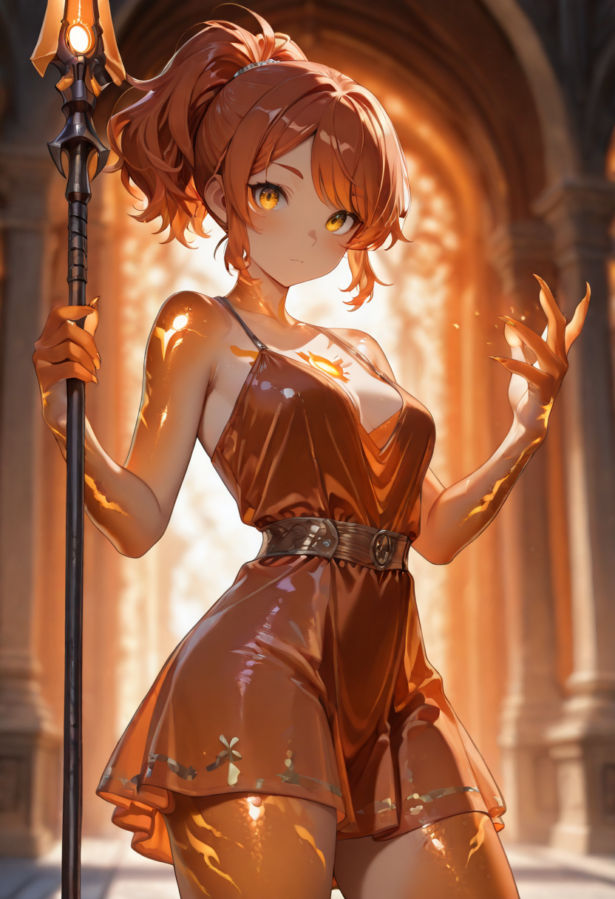
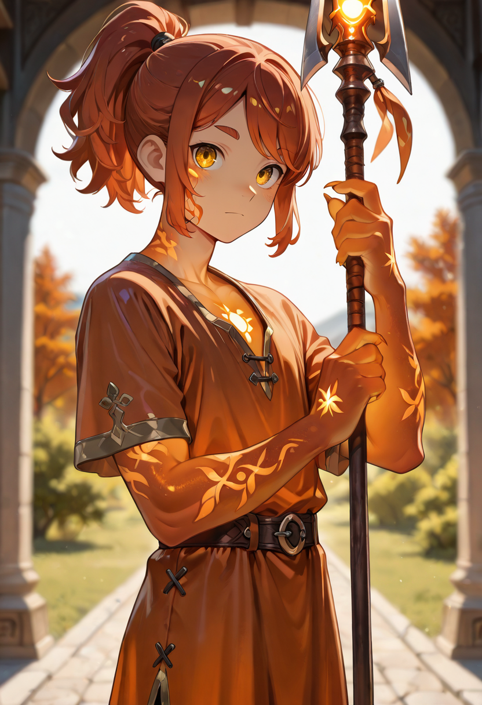

The Body Between
The Custodians were not soldiers. They were bodyguards , personal guards of estate administrators, judicial officers, minor provincial lords. Their expertise was not in combat but in positioning. They understood lines of sight, understood which angle produced a fatal opening, and spent their working lives placing themselves between those angles and the people they were paid to protect. Whether the thing they were guarding was worth protecting was, professionally, not their concern.
In death, the instinct persists without the income. The Custodians now protect Sentinelle archers and casters with the same mechanical calm they showed in their first lives , stepping into impact trajectories, angling shields to redirect incoming shots, treating the protection of the formation's vulnerable units as a geometric problem with a clean solution.
They are quieter than most Sentinelle units. They were always hired staff, trained to be present without being heard. In the formation they remain present without being heard, which actually makes them more effective , enemies often misjudge their positions because the Custodian gives nothing away through noise or posturing.
Tactical Data

Amber Shot
Base
Crystalline Cage
ActiveGallery